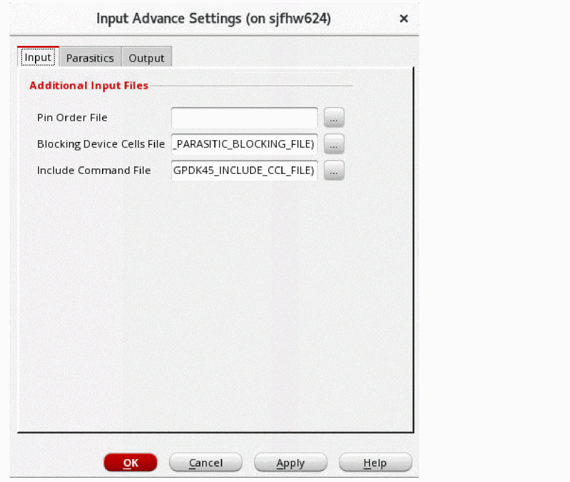
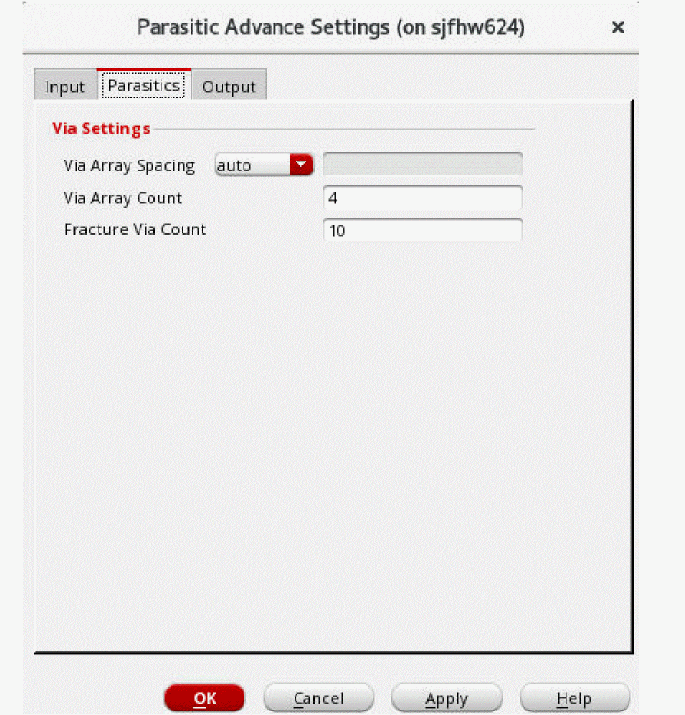
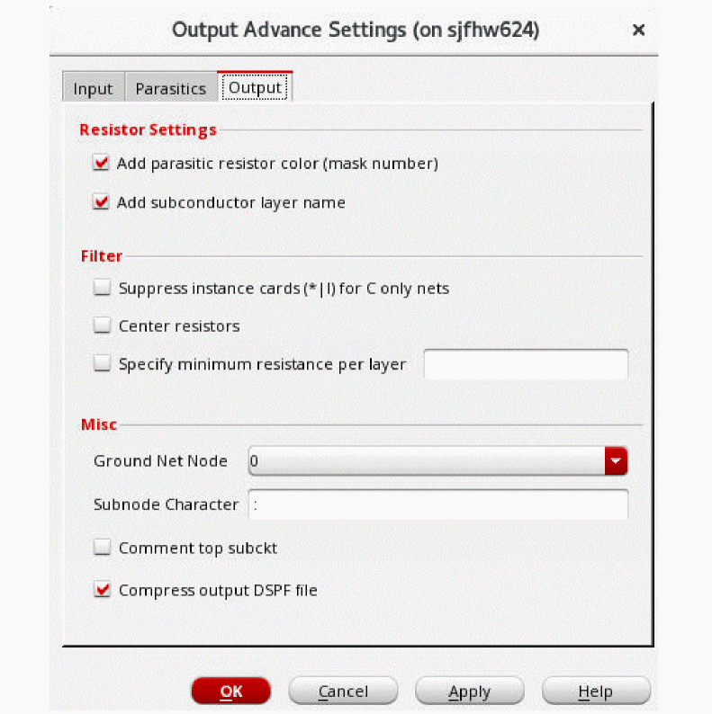

Specifying Advanced Extraction Settings
- In the Extraction Setup form (Setup – Extraction from the task pane), click the Advanced Settings ( ) icon on the Input, Type, and Output tabs to open the advanced settings form.
-
On the Input tab, specify Pin Order File to define the order of pins to be used during extraction.

- Specify Blocking Device Cells File to list the parasitic blocking device cell names.
- Specify Include Command File to provide the customized extract commands.
-
On the Parasitics tab, select either auto or manual from the Via Array Spacing list.
 - In the Via Array Count field, specify the number of vias per side allowed in an array.
- In the Fracture Via Count field, specify the number that will be used to divide the pseudo vias into segments during extraction.
-
On the Output tab, select Add parasitic resistor color (mask number) if you want to enable color-aware EM analysis.
 - Select Add subconductor layer name if you want to include information about the parasitic resistor models for the subconductor layers.
- Select Suppress instance cards (*|I) for C only nets if you do not want to print instance cards and the corresponding dummy resistors for the capacitance-only nets in the results.
- Select Center resistors if you want to include sub-nodes after eliminating resistors with small resistance values.
- Select Specify minimum resistance per layer and specify the LVS layer name for which the minimum resistance value for the extracted parasitic resistors is to be applied.
- Select the reference node (net) from the Ground Net Node drop-down list.
- In the Subnode Character field, specify the subnode identification character.
- Select Comment top subckt to comment out the top sub circuit statements from the DSPF file.
- Select Compress output DSPF File to generate the DSPF file in a compressed format.
- Click OK.
Related Topics
- Environment Variables
- Using an Existing DSPF File
- Using an Existing CCL File
- Specifying New Extraction Settings
Return to top